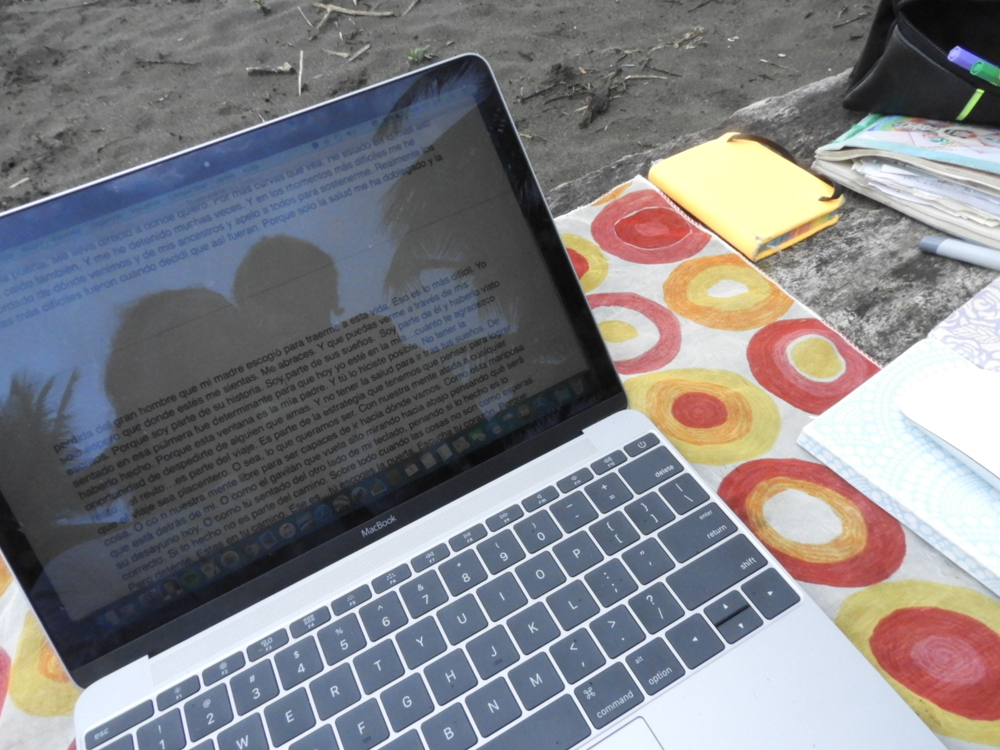

MARTHA LLANO
Apasionada por capturar los instantes con mi mirada y
transmitirlos con mi propia voz
MIS RELATOS
Lo que siento

De pequeña me veía siendo una escritora; tenía tantas emociones en mi interior que, mientras todo transcurría, yo iba escribiendo esas historias mentalmente. Lo que me abrumaba, lo que me gustaba, lo que no me gustaba tanto, los colores vívidos y brillantes de la naturaleza, un cielo azul mientras me tendía boca arriba a ver el cielo, las estrellas fugaces y las no tan fugaces…hoy aún, cuando algo dispara una emoción en mi interior, capturo ese instante en mi mente y luego regreso a él para escribirlo, siempre pongo una misma canción, hay veces cambio, pero siempre escribo para procesar eso que siento.
Siempre que cierro los ojos y me veo hacia adentro, me veo sentada en aquella sillita azul, en una ventana que nunca he sabido dónde es y que he perseguido toda mi vida, en esa calma y serenidad que, aunque me ha costado mucho, hoy sé que la he encontrado. Porque la ventana, la silla, ese horizonte y la paz que sentía en mi alma, estaban en mí, no en ninguna parte.
Soy escritora por naturaleza, no sigo reglas, normas, métrica, porque mi corazón tiene un ritmo así tal cual lo escribo y lo lees. Sin pausa, sin puntos ni comas, como mi vida. Veo números en todo, siento que la naturaleza es una gran composición matemática y busco la belleza que hay en ella por todos lados.
Es mi compañera y mi guía; el mundo verde, así como escribir, han sido mi camino y mi salvación. Cuando he estado perdida, ambas me han encontrado. Me han tomado de la mano en mi camino y son mis bastones, literal.
“Yo solo espero que desde la distancia sea capaz de mantener en pie un bosque centenario que no solo es bosque, es agua, es aire puro, son semillas guardadas para que Zuly, la chica del futuro a quien Anuk le escribe, tenga aún respuesta a su carta del 2198.”
Entre dos mundos
Hoy vivo entre dos lugares que considero importantes desde dos perspectivas. La Reserva Natural El Robledal es mi iniciativa privada de conservar porque lo que ya había era valioso.
Robles centenarios que, a pesar del crecimiento de un corregimiento en un municipio pujante en el siglo 19, aún estaban de pie. Allí no solo el roble, sino muchas otras especies se refugiaron y en un cultivo de papa abandonado ocurrió la magia que la naturaleza sabe hacer. Esconderse para prosperar.
Y lo logró, porque en el Robledal hay árboles de mucho más de cien años echando buenas semillas cada dos años, y las cuales hemos recogido y depositado la confianza en el vivero Robledales de EPM para que de ellas lograran sembrar y repartir miles de robles para el territorio y muchos otros lugares.
La casa en el río
Como parte de permitirle a otros llegar, yo me he desplazado a otras tierras tibias en donde, después de un llamado en una de mis caminatas con mi gran amigo Luis Efrén, y de dos años de irme adaptando lentamente, he encontrado mi propósito en estas tierras.
Godoya antioqueña y Pragmipedium schlimii son dos de las razones por las que estoy tan enamorada de este territorio, además de su gente noble, que viene de sufrir desplazamientos y de haber vivido muy de cerca la violencia hace 26 años de nuestro país.
La llamo la casa en el río, pero no es un río, son cuatro quebradas que con sus cascadas y su hermoso cauce de piedras me tienen atrapada. Mi hogar hoy es verde azul.
Observar
A donde vaya, siempre hago lo mismo. Observar. No en vano me dicen por ahí la que ve más. Pero no solo hablan de naturaleza. Para observar y aprender, comparto mucho de lo que veo en una maravillosa aplicación, iNaturalist.
Así mismo, en Merlin, eBird para aves y Happywhale para la fotoidentificación de ballenas jorobadas, una especie importante en mi vida en el Chocó, y por quienes llegué a Maine, especialmente a Mount Desert Rock, administrada por el College of the Atlantic.
“Solo podemos conservar aquello que conocemos y amamos”.
La sostenibilidad empieza con casas
Rosa de los Vientos
Rosa de los Vientos es una casa taller construida hace treinta años con todo el amor y la dulzura que pude. En ella hoy deseo recibir huéspedes conscientes, amorosos, artistas, soñadores y pensadores, creadores que deseen un espacio sutil y lleno de energía para la creación.
Casa de Madera
Casa de Madera es una pequeña casa de madera con la magia de poder ver el bosque desde el dosel, o sea, desde la parte alta. Ideal para estar en contemplación con las comodidades de tenerlo todo cerca: el parqueadero, la vía, las tiendas, los vecinos.
Casa Entrezarros
Casa Entrezarros es un refugio completamente adentro del bosque. Hecha con todo el respeto y sin tumbar un solo árbol. Pequeña en su interior, pero grande en su alrededor.
Gestionando mis emociones
Eso es justamente. Así le doy trámite a lo que veo y siento. A lo que vibra en mi interior y sale de alguna forma.
Escribo para mi, por placer, algunas veces para otros, muchas veces publica, otras se quedan mis palabras guardadas en mi computador, antes en una servilleta, en cualquier papel, ni blanco tenía que ser, solo era necesario un pedacito libre, un lugarcito para yo expresarme, para que mi emoción se transformara en palabras y así la liberara.
He escrito un par de novelas, María Flores, un sueño soñado que tuve, que luego para defenderla fue una tienda, una marca, un proyecto casi frustrado por cuenta de quienes no son capaces de producir ideas sino robarlas; y La he visto, una historia mía muy personal, esa que vivimos tú y yo y solo es nuestra.
Amo escribir relatos cortos, de lo que veo a diario, de eso que me aprieta el pecho y que muchas veces me saca risas y otras lágrimas. Tengo miles, intento ordenarlas, aquí quedan muchas.
Una historia de amor prohibida
La he visto.
Mi voz
Mi voz es importante, sacarle no fue tan fácil. Porque hay veces lo que vivimos duele en lo más profundo. Pero desde que lo hice no he parado. Worldpulse me devolvió mi voz a través de un escrito profundamente íntimo y desgarrador.
Nunca supe cuán dañada había quedado después de aquella noche en mi amado Chocó. Porque hablar de ellos es casi prohibido en nuestro mundo. Pero pude hacerlo y empecé a sanar… lo sigo haciendo a cada día que logro dejar salir mi voz con mis escritos.
Diseñar para interpretar
Al graduarme de la universidad, comencé a sentir mi proyecto casi de vida. Con él le di vida al sueño de divulgar información sobre las especies y ecosistemas colombianos en peligro de extinción.
Luego entendí que los humanos teníamos que hacer parte de esa divulgación y comencé a vincularme con las comunidades. De diferentes lugares de Colombia.
Después de 8 años, este proyecto se convirtió en una fundación con la que continué mi labor de divulgación, pero con la que además puse mi pasión al servicio de otras empresas y proyectos que disfruté mucho en mi viaje trabajando sola o en equipo: El acuario de Explora, El Parque Arví, Una guía de desarrollo turístico para el valle de Aburrá.
SENTIR
Sentir realizó las siguiente ilustraciones y propuestas.
Captando la luz que veo
Todo lo que veo tiene luz. Una que hay veces todos vemos, otra a la que me siento más sensible. La he perseguido sin parar por todas partes, éste es mi recorrido:
Paralelos a un mismo eje móvil
Tocando tierra
Ecosistemas entramados
Diversas por naturaleza
Naturaleza
Territorios y comunidades
Aventura
Contacto
Este espacio reúne mi recorrido, mis escritos, mis fotografías, mis proyectos y aquello que todavía estoy construyendo.
Para escribirme: